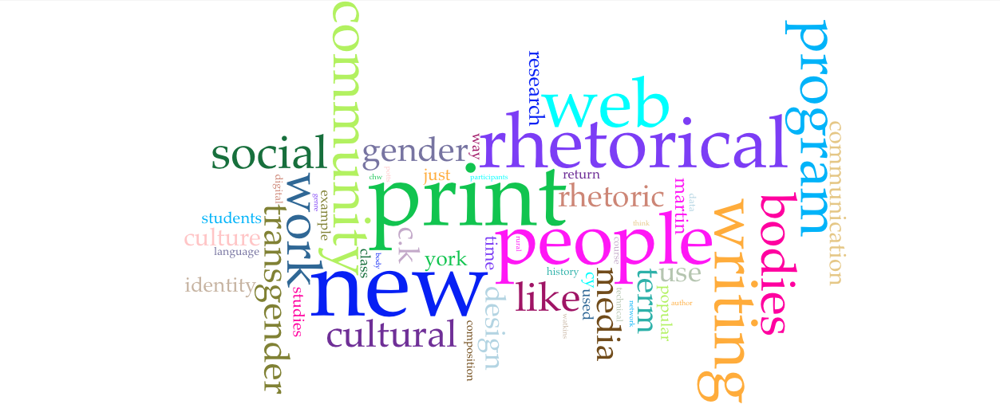
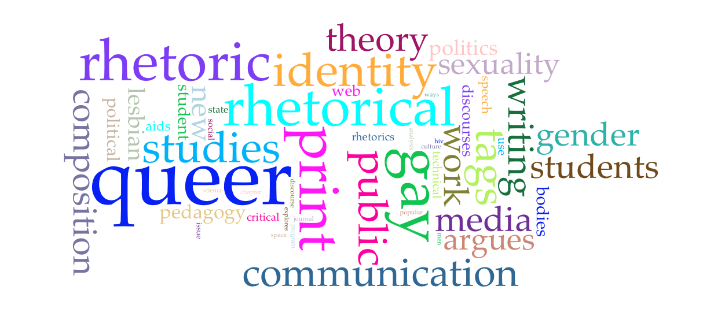
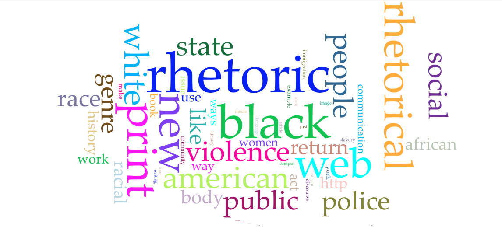
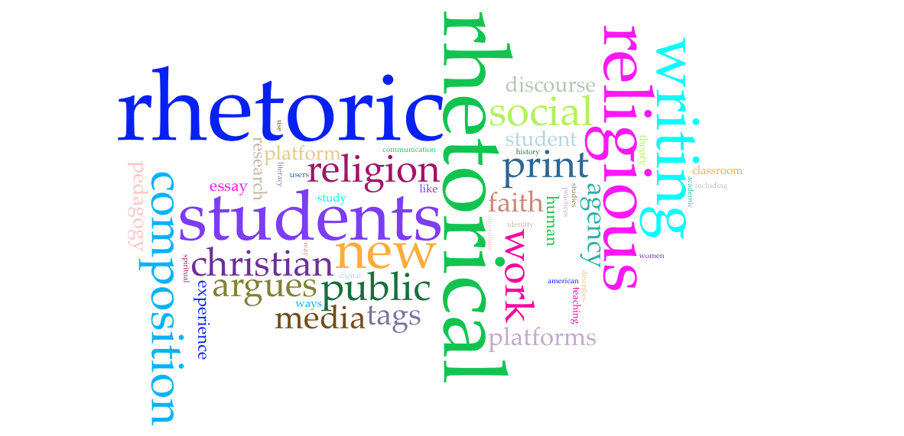
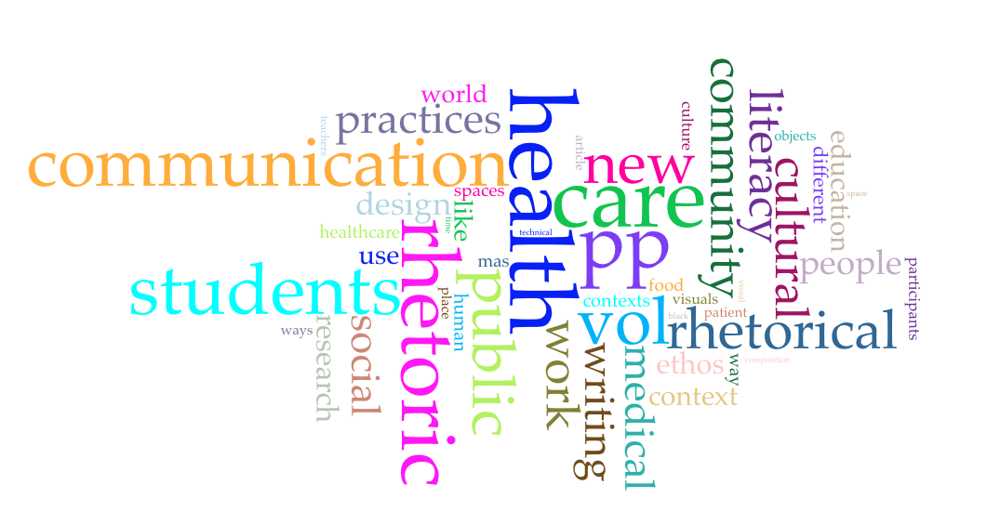

Distant Reading Project
- What units of meaning does this method of reading help you apprehend?
- This form of reading helps me understand the main topics this journal covers, both in general across volumes and within each volume. The words within the cloud allow me to quickly understand what this journal cares about in relation to rhetoric and helps me understand the philosophy behind the journal. Much of what the journal covers are very relevant to today’s cultural climate, including social issues like race, gender, and sexuality.
- What themes, patterns, or trends do you notice in and across your word clouds?
- In this distant reading, I see one pattern across the entirety of the volumes. As would be expected, the journal spends a large amount of time discussing writing and communication. Each word cloud from each volume includes several buzz words showing this pattern, including the following words: writing, communication, composition, rhetoric, and rhetorical. The word cloud for each volume tends to include more words related to the subject matter covered in that issue. For example, volume 3 discusses unequal representation of vulnerable populations in rhetoric and, as such, includes words like gender, transgender, and bodies. These words are typically used in studies related to the LGBTQ+ population. As another example, volume 5 discusses the relation between race, rhetoric, and the state, along with how rhetoric is used in social justice. In this word cloud, the terms once again reflect the theme of the volume. Terms appearing include: black, white, race, women, social, African, police, and violence.
- What questions, connections, patterns, or insights do they provoke?
- I have never analyzed text in this way before. It was enlightening to come to a new understanding of a way to understand writing. This reminds me of when I took my first literary theory class here at the University and we were discussing genre, including what makes a genre. This word cloud exercise almost seems to create the outline for the genre of the Present Tense journal. I’m not sure if that makes sense, but I think it would be interesting to use this method on a fiction genre and see what kinds of results you get. I imagine it would differ depending on what sub-genre you used.
- How has this reading (and publishing) activity helped you make sense of “digital rhetoric” (whatever that is)?
- I think the most interesting part of this project has been the actual html writing aspect. It has helped me understand digital rhetoric in the sense of what you should do to ensure a page including images is useful to your audience. I feel like I now have a better grasp on the production aspect of digital rhetoric, which is something I feel I should know as a writer.
Present Tense Vol. 3

Volume 3 of Present Tense discusses the issues with multimodal collection and unequal representations of vulnerable populations. Pictured above is a word cloud with data collected from the volume in its entirety.
Present Tense Vol. 4

Volume 4 of Present Tense discusses rhetoric and the public sphere and explores rhetoric in various locations. Pictured above is a word cloud with data collected from the volume in its entirety.
Present Tense Vol. 5

Volume 5 of Present Tense discusses how rhetoric moves and causes action, the relation between race, rhetoric, and the state, and how rhetoric is utilized in social justice. Pictured above is a word cloud with data collected from the volume in its entirety.
Present Tense Vol. 6

Volume 6 of Present Tense discusses the theories of embodiment and affect in relation to rhetoric, rhetoric in relation to students, politics, and social impact, and the effects of platform rhetoric. Pictured above is a word cloud with data collected from the volume in its entirety.
Present Tense Vol. 7

Volume 7 of Present Tense discusses rhetoric in relation to identity and social justice, media, and the health and medical field. Pictured above is a word cloud with data collected from the volume in its entirety.